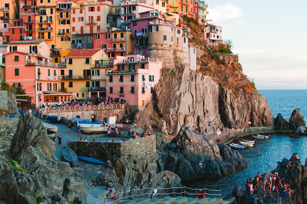

Итальянский язык – проще простого
Итальянский язык – проще простого
Язык, общение и немного Италии
Знакомство / Занятия / Немного Италии / Стоимость / Записаться
Что будем изучать · Итальянский словарь ↗
|
Ciao! Давайте знакомиться. Итальянский начинается
|
 Cinque terre, Manarola |
Обо мне | Цели занятий | Наверх
Немного обо мне
Я студентка направления «Лингвистика» в Высшей Школе Экономики. Учу итальянский язык уже более 10 лет. Имею подтвержденный сертификат CILS уровня B2 и C1.
Мой уровень владения: C1.
Опыт: Давала занятия своим интересующимся друзьям и учила их по подлинным итальянским изданиям учебников.
С какой цели можно начать?
- Научиться читать и рассказывать о себе.
- Подготовиться к общению в путешествии.
- Ближе познакомиться с языком и культурой Италии.
Программу и темп обсудим при знакомстве. Перейти к записи на занятие.
Учебная часть: DOM_JS. Считываем информацию из DOM · Изменяем кириллицу на латиницу по клику
Решение алгоритмической задачи
Коробко Мария · Итальянский язык | Наверх ↑